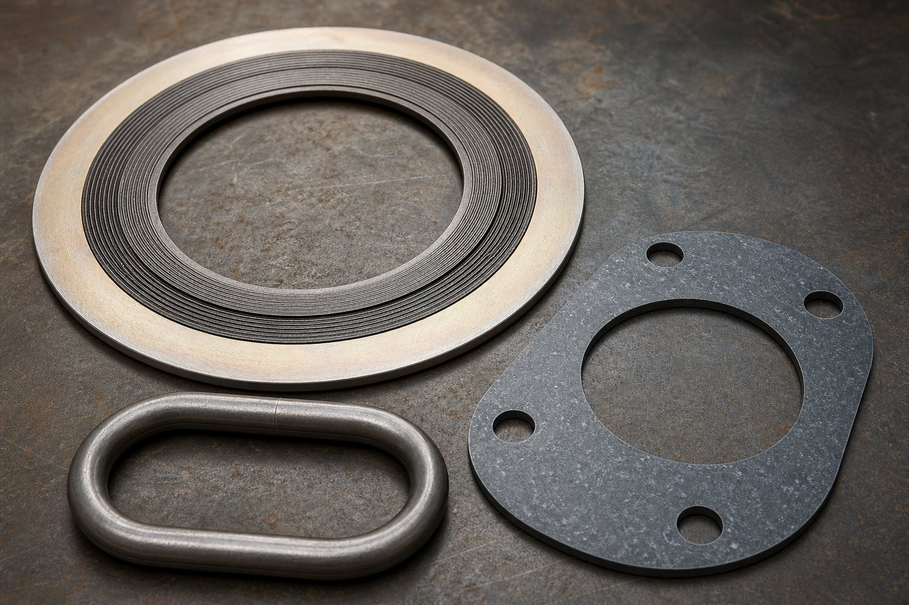

نقش گسکت در اتصال فلنجی
اتصال فلنجی یک سیستم سهجزئی است: فلنج، پیچ و مهره و گسکت. گسکت با پر کردن ناهمواریهای میکروسکوپی سطح، مانع عبور سیال میشود. انتخاب نادرست یا نصب اشتباه آن، حتی با بهترین فلنجها نیز به نشتی منجر میگردد.

خانوادههای اصلی
| خانواده | نمونه | کاربرد |
|---|---|---|
| غیرفلزی | لاستیکی، فایبر، گرافیت | کلاسهای پایین و سرویسهای عمومی |
| نیمهفلزی | مارپیچ، کمدپروفایل، فلز-پوش | رایجترین در خطوط فرایندی |
| فلزی | رینگجوی بیضی و هشتگوش | کلاسهای بالا و سطوح رینگجوی |
| خاص | لنز و واشرهای ویژه | سرویسهای فوق فشار و خاص |
ساختار گسکت مارپیچ
- نوارهای مارپیچ فلزی و پرکننده نرم، انعطاف و برگشتپذیری ایجاد میکنند.
- رینگ داخلی از فرو رفتن گسکت به مسیر جریان جلوگیری میکند.
- رینگ مرکزکنده، موقعیتدهی و مهار فشردگی را فراهم میکند.
- متریال نوار و پرکننده باید با سیال و دما سازگار باشد.
معیارهای انتخاب
- کلاس فشاری و سطح آببندی فلنج را مشخص کنید.
- سیال و دمای کاری را برای انتخاب متریال به کار ببرید.
- برای کلاسهای بالا، رینگ فلزی مناسب شیار انتخاب کنید.
- الزامات پروژه و سوابق سرویس مشابه را در نظر بگیرید.
اشتباهات رایج نصب
- استفاده مجدد از گسکت باز شده.
- گشتاور بیش از حد یا نامتقارن.
- نصب گسکت با رینگ داخلی روی سطح نامتناسب.
- سطح آلوده یا آسیبدیده فلنج پیش از نصب.
- عدم رعایت ترتیب ستارهای سفت کردن پیچها.
استاندارها و ابعاد
ابعاد گسکتهای فلزی و نیمهفلزی برای فلنجهای استاندارد، در مراجع ابعادی گسکت تعریف شده است و باید با کلاس و سطح آببندی فلنج هماهنگ باشد. گسکت غیراستاندارد یا با ابعاد نادرست، حتی از جنس مناسب نیز آببندی قابل اتکا ایجاد نمیکند.
نگهداری و حمل
- گسکتها باید در بستهبندی اصلی و دور از رطوبت نگهداری شوند.
- از خم شدن و آسیب مکانیکی گسکتهای مارپیچ جلوگیری شود.
- تا زمان نصب، سطوح آببندی محافظت شوند.
- گسکتهای آسیبدیده در تحویل رد شوند.
جمعبندی
گسکت درست، با نصب درست، آببندی پایدار ایجاد میکند. انتخاب را بر اساس کلاس، سطح، سیال و دما انجام دهید و گشتاور را کنترلشده اعمال کنید.
سوالات رایج
رایجترین گسکت برای خطوط فرایندی کدام است؟
گسکت مارپیچ با رینگ داخلی و رینگ مرکزکننده، انتخاب پیشفرض بیشتر خطوط فرایندی با کلاسهای متوسط و بالاست؛ زیرا هم انعطاف دارد و هم تحمل دما و فشار خوبی دارد.
در کلاسهای بالا چه گسکتی لازم است؟
در کلاسهای بالا و سطوح رینگجوی، از رینگهای فلزی با پروفایل متناسب شیار استفاده میشود. انتخاب پروفایل و متریال رینگ باید دقیقاً با سطح فلنج هماهنگ باشد.
چرا گسکت را نباید دوباره استفاده کرد؟
گسکت پس از یک بار فشردهسازی، خاصیت ارتجاعی و آببندی خود را از دست میدهد. استفاده مجدد یکی از دلایل رایج نشتی پس از بازرسی و راهاندازی است.
گشتاور بیش از حد چه آسیبی میزند؟
فشردهسازی بیش از حد میتواند گسکت را له کند، رینگ مرکزکننده را دفرمه کند و حتی به سطح فلنج آسیب بزند. گشتاور باید طبق مقادیر توصیهشده و به صورت متقارن اعمال شود.
مطالب مرتبط
- استاندارد فلنجهای جوشی (ASME B16.5)
- راهنمای جنس و متریال فلنج صنعتی
- مقایسه فلنج گلودار و اسلیپآن
- راهنمای کامل گواهی مواد و تست
- راهنمای اتصالات فیتینگ پایپینگ
با ذکر کلاس فلنج، سطح آببندی، سیال و دما، گسکت مناسب همراه مدارک عرضه میشود. گسکتهای مارپیچ با رینگ داخلی و مرکزکنده قابل تامین هستند.
مشاهده صفحه محصول ← ثبت RFQ همین محصولتامین این تجهیزات را به پیشرو تجهیز فرتاک بسپارید
شرکت پیشرو تجهیز فرتاک تامینکننده تخصصی تجهیزات صنعتی برای پروژههای نفت، گاز، پتروشیمی، فولاد و نیروگاهی است. برای دریافت پیشنهاد فنی و قیمت، استعلام (RFQ) خود را ثبت کنید تا کارشناسان مهندسی فروش در کوتاهترین زمان پاسخ دهند.
- تامین گسکتمارپیچ، کمدپروفایل و رینگ فلزی
- تامین تجهیزات پایپینگفلنج و پیچ و مهره هماهنگ با گسکت